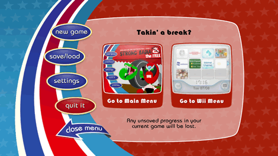

Wählen Sie "StrongBadia the Free" von Ihrem Wii-Menü aus. Der Startbildschirm wird geladen. Um die Folge zu starten, zielen Sie mit dem Zeiger auf Start und drücken Sie  . Das bringt Sie zum Hauptmenü.
. Das bringt Sie zum Hauptmenü.
Im Hauptmenü haben Sie die folgenden Optionen:
- New Game: Starten Sie das Spiel am Anfang oder spielen Sie das Tutorial.
- Save/Load: Speichern Sie ein laufendes Spiel oder öffnen Sie ein gespeichertes Spiel.
- Settings: Verändern Sie den Hinweis-Level, schalten Sie die Untertitel ein bzw. aus, schreiben Sie Texte und verändern Sie die Toneinstellungen.
- Quit It: Das Spiel verlassen und zum Wii-Menü zurückkehren.
- Preview: Sieh dir eine Vorschau der nächsten Folge von Strong Bad's Cool Game for Attractive People an.
Um eines dieser Dinge zu machen, zielen Sie auf die passende Überschrift und drücken Sie
.
Zielen Sie auf New Game und drücken Sie . Sie können nun entweder die Folge beginnen oder das Tutorial starten. Wenn diese Spiele neu für Sie sind oder sie wissen wollen, wie die Steuerung funktioniert, beginnen Sie mit dem Tutorial.
Zielen Sie auf Save/Load und drücken Sie . Sie haben drei Speicherplätze und eine automatische Speicherung, die das Spiel an gewissen Punkten abspeichert. Immer wenn automatisch abgespeichert wird, wird die letzte Auto-Speicherung überschrieben, wenn Sie also später zurückgehen wollen, um einen bestimmten Teil nochmals zu spielen, sollten Sie in einem der anderen Slots abspeichern.
Um Ihr Spiel abzuspeichern, zielen Sie auf Save neben einem der Slots und drücken Sie . Um ein gespeichertes Spiel zu laden, zielen Sie auf Load neben dem entsprechenden Slot und drücken Sie .
Zielen Sie auf Settings und drücken Sie . In diesem Bildschirm können Sie Ihre Spieleinstellungen verändern. Um diese Einstellungen zu ändern, zielen Sie auf die Bildschirmknöpfe und drücken Sie . Hier sind Ihre Optionen:
- Give Hints: Stellt den Hinweis-Level ein. Wenn Sie beim Spielen nicht mehr weiterwissen, weiß das Spiel, wann es Ihnen, mit einem kleinen Schubser in die richtige Richtung, weiterhelfen muss.
- Subtitles: Schaltet die Untertitel ein oder aus, wenn die Figuren sprechen.
- Pop-up Text: Schaltet den Text ein und aus, der erscheint, wenn Sie mit dem Zeiger über einem Objekt sind, mit dem Strong Bad interagieren kann. (Selbst wenn der Pop-up-Text ausgeschaltet ist, wird der Zeiger sich bewegen, wenn Sie ihn über etwas halten, das benutzt werden kann.)
- Music: Steuert die Lautstärke der Hintergrundmusik des Spieles.
- Voice: Steuert die Lautstärke des gesprochenen Dialogs.
- Sounds: Legt die Lautstärke der Soundeffekte des Spiels fest (wie z.B. Schrittgeräusche).

Zielen Sie auf Quit It und drücken Sie . In diesem Bildschirm können Sie das Spiel verlassen. Sie können wählen, ob sie zum Hauptmenü des Spiels oder zum Wii-Menü zurückkehren wollen.
Zeige auf Preview und drücke um dir eine Vorschau der nächsten Folge von Strong Bad's Cool Game for Attractive People anzusehen.